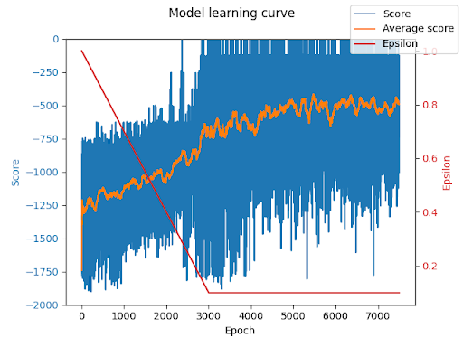

This project assesses the ability of a deep reinforcement learning neural network to build proficiency in Gymnasium’s swinging pendulum environment. A reinforcement learning algorithm uses past experiences to build an association between the environment’s current state and the next state given a certain action. Through training, the model improves score estimates, or Q values, for each potential action A in a state S, and learns which actions return the highest scores.
I used Gymnasium, a common library used in AI applications that provides prebuilt environments, to train the neural network. I drew from the paper Human-level control through deep reinforcement learning and the online course Modern Reinforcement Learning: Deep Q Agents to construct a deep Q learning agent. I implemented decaying epsilon-greedy action selection to promote exploration at the start of training and exploitation at the end. To reduce model overfitting, I implemented a memory buffer that stores past game states and, when sampled, returns a random set of memories. I then implemented the learn function, which samples these states, estimates their point values, then calculates and backpropagates the loss based on the difference between predicted scores and observed scores. The two networks themselves have one hidden layer with 32 neurons, use an RMS optimizer, and calculate loss with MSE.
The agent is scored based on how well it keeps the swinging pendulum upright. It is penalized for moving the pendulum and loses points whenever the pendulum is not upright. The max score is 0. The average score of the model more than doubles throughout training from a value of about -1300 to -500. The best network models are saved and available for demonstration in myGitHub as models/best_eval and models/best_next, respectively. After validating the function of the code, I began to test different hyperparameters and found that 32 neurons in the hidden layer with an epsilon decrement rate of 1.5e-6 leads to the highest observed average score of about -500 points. This test demonstrated an extremely clear increase in capability as epsilon decremented to 0.1. Low scores and seemingly noisy graph output is the result of the environment’s inherent stochasticity; when the pendulum starts at the absolute lowest position and with zero angular momentum, the model accumulates a large negative score as it swings the pendulum back and forth until it has enough momentum to move to the upright position. There is no torque output in the environment’s action space that is large enough to accomplish this in one swing, thus some of the scores drop as low as -1700 points.
